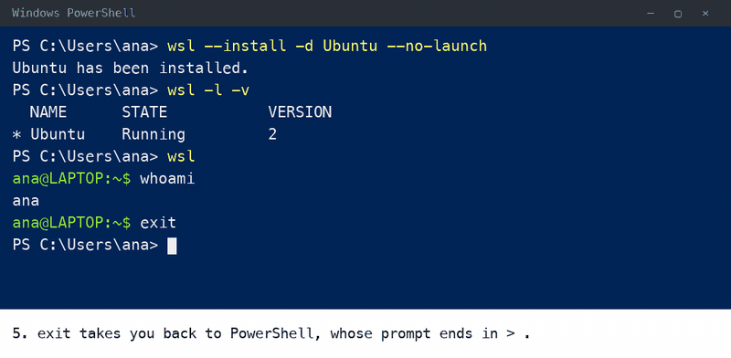
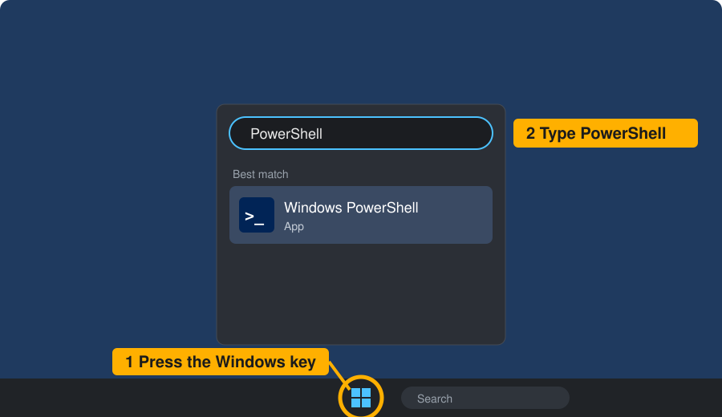
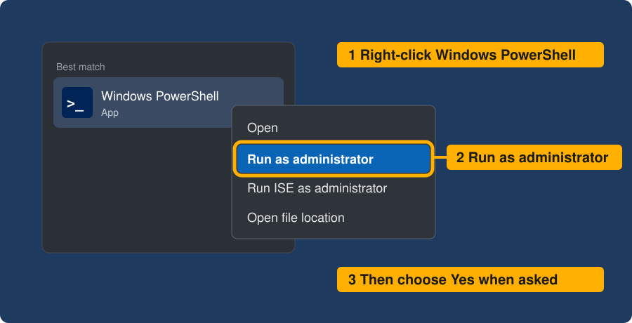
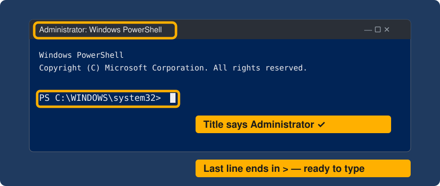

Apéndice A — Windows: prepara Ubuntu
Quarto, publicación reproducible, asistentes de programación, Markdown, Python, EPUB, análisis de datos, k-means
Este apéndice es el paso 1 de la preparación (Sección 3.2) para Windows. Las herramientas del taller están hechas para Linux, así que en Windows instalas Ubuntu, una versión de Linux muy usada, dentro de Windows con WSL, el Subsistema de Windows para Linux. Piensa en Windows como tu casa, con tu navegador, tus archivos y tus aplicaciones, y en Ubuntu como una habitación dentro de ella, una ventana en la que escribes comandos. Todo lo de este libro pasa en esa habitación, tu navegador de Windows sigue abriendo lo que haces y no se borra nada de Windows.
¿Por qué no PowerShell, la ventana de comandos propia de Windows? Porque los comandos del libro, y la forma en que se probó la preparación, son para Linux. Algunas herramientas tienen instaladores para Windows, pero sus rutas y sus comandos son distintos, y cada variante es una forma más de equivocarse.
La Figura A.1 muestra todo el procedimiento en una sola ventana. Los pasos de abajo van más despacio, con un reinicio en el medio, y la primera vez que se abre Ubuntu también te pide elegir un nombre de usuario y una contraseña, algo que la animación se salta.

a ana@LAPTOP:~$; whoami imprime ana; exit vuelve al indicador de PowerShell." class="anim img-fluid figure-img" loading="lazy">wsl inicia Ubuntu y whoami imprime tu nombre. Una ilustración dibujada para el taller, en inglés.
Antes de empezar
- Unos 20 minutos y un reinicio.
- Una cuenta de administrador en esta computadora. En una laptop del trabajo, pregúntale primero a soporte técnico; si alguien de soporte escribe la contraseña por ti, no cierres tu sesión. Sin una cuenta así, no se puede instalar WSL: arregla para trabajar en la computadora de otra persona.
- Windows 11, o Windows 10 versión 2004 o más reciente (Configuración → Sistema → Acerca de muestra la tuya).
- Enchufada, con una conexión fuerte: Ubuntu es una descarga grande.
- Estas instrucciones en una segunda pantalla o en el teléfono, porque el reinicio cierra tu navegador.
Haz un paso, compara tu pantalla con Deberías ver y luego sigue. Si algo se ve distinto, mira Si te trabas.
Paso 1: abre PowerShell como administrador
PowerShell es una ventana de Windows para escribir comandos; la necesitas solo unos minutos.
- Presiona la tecla Windows, o haz clic en el logo de Windows de la barra de tareas, y escribe
PowerShell. - Haz clic derecho en “Windows PowerShell” y elige Ejecutar como administrador (Run as administrator).
- Elige Sí cuando Windows pregunte.


Una ventana cuyo título empieza con “Administrator” (o “Administrador”), que termina en una línea como PS C:\WINDOWS\system32>.

Paso 2: activa WSL
Pega esto en la ventana de PowerShell (Ctrl+V, o un clic derecho si eso no hace nada) y presiona Enter:
wsl --install -d Ubuntu --no-launchPS C:\WINDOWS\system32> wsl --install -d Ubuntu --no-launch
Installing: Virtual Machine Platform
Virtual Machine Platform has been installed.
Installing: Windows Subsystem for Linux
Windows Subsystem for Linux has been installed.
Installing: Ubuntu
Ubuntu has been installed.
The requested operation is successful. Changes will not be effective until the system is rebooted.Un mensaje que dice que tienes que reiniciar, como “Changes will not be effective until the system is rebooted” (los cambios no tendrán efecto hasta que se reinicie el sistema). Si en cambio dice que Ubuntu está instalado o que “already exists” (ya existe), salta al paso 5.
Paso 3: reinicia la computadora
Guarda tu trabajo y luego Inicio → Inicio/apagado → Reiniciar.
El comando se ejecuta dos veces porque, cuando hace falta un reinicio, la primera ejecución solo activa funciones de Windows y no instala ningún Linux (revisado contra el código fuente de WSL, versión 3.0.3, el 2026-11-06). --no-launch evita que el primer arranque de Ubuntu ocurra en la ventana de administrador, cuya carpeta es una carpeta del sistema de Windows.
Paso 4: descarga Ubuntu
- Abre una ventana de PowerShell normal, no como administrador: presiona la tecla Windows, escribe
PowerShelly presiona Enter. Ubuntu se instala para la cuenta que ejecuta esta línea, así que tiene que ser la tuya. - Pega la misma línea y presiona Enter:
wsl --install -d Ubuntu --no-launchEsta es la espera larga: la descarga puede tardar muchos minutos, y el porcentaje puede quedarse quieto un rato.
Que terminó, o “already exists”. Las dos cosas significan que sigas. Deja esta ventana abierta.
Ahora vas a tener dos ventanas, y su última línea las distingue: la de PowerShell termina en > (como PS C:\Users\Ana>), la de Ubuntu en $ (como ana@LAPTOP:~$). PowerShell es solo para los pasos 1, 2, 4 y 6; todo lo demás pasa en Ubuntu.
Paso 5: abre Ubuntu y elige un nombre de usuario y una contraseña
- Presiona la tecla Windows, escribe
Ubuntuy presiona Enter. El primer arranque desempaca archivos: espera. - Nombre de usuario: una palabra corta en minúsculas, sin espacios, como
ana. No tiene que coincidir con tu nombre de Windows. - Contraseña: escribe una que vayas a recordar, presiona Enter y escríbela otra vez.
No aparece nada mientras escribes la contraseña: ni puntos ni asteriscos. Es normal; sigue escribiendo y presiona Enter. Anota la contraseña: sudo te la pide en el paso 8.
Un indicador, la línea que significa “lista para un comando”, con tus propios nombres: ana@LAPTOP:~$. ana eres tú, LAPTOP esta computadora, ~ tu carpeta personal y $ donde escribes. En esta ventana de Ubuntu, escribe whoami y presiona Enter: imprime tu nombre de usuario.
Paso 6: comprueba que Ubuntu corre en WSL 2
En la ventana de PowerShell (su línea termina en >):
wsl -l -vUbuntu con un 2 en la columna VERSION:
NAME STATE VERSION
* Ubuntu Running 2Si dice 1, ejecuta wsl --set-version Ubuntu 2 y espera. Luego escribe exit para cerrar PowerShell.
Paso 7: practica copiar y pegar
| Con el mouse | Con el teclado | |
|---|---|---|
| Copiar | selecciona el texto y luego haz clic derecho | selecciona el texto y luego Ctrl+Shift+C |
| Pegar | clic derecho sin nada seleccionado | Ctrl+Shift+V |
Ctrl+C sin nada seleccionado no copia: detiene lo que esté corriendo. Si pasa eso, vuelve a ejecutar el comando.
Copia echo "Paste works", pégalo en Ubuntu y presiona Enter; la línea siguiente debería decir Paste works.
Paso 8: instala dos herramientas pequeñas
sudo apt update && sudo apt install -y curl gitsudo significa “haz esto como administrador” y te pide tu contraseña de Ubuntu del paso 5, oculta otra vez; apt es el instalador de Ubuntu; && significa “y luego, si eso funcionó”. Pasa mucho texto. Cuando vuelva el $, comprueba:
curl --version && git --versionUn número de versión para cada una, como git version 2.43.0. El tuyo puede ser distinto.
Paso 9: cuatro hábitos
Quédate en tu carpeta personal. Guarda ahí las carpetas de los proyectos, no en Documentos, el Escritorio ni OneDrive. Si el indicador muestra /mnt/c, estás en una carpeta de Windows: cd ~ te lleva a tu carpeta personal. (Las unidades de Windows aparecen bajo /mnt/; mantener los proyectos en ~ también es más rápido.)
Mira tus archivos en Windows. explorer.exe . abre la carpeta actual en el Explorador de archivos, donde puedes hacer doble clic en lo que hiciste.
Abre una segunda pestaña. Ctrl+Shift+D duplica la pestaña; vas a necesitar una mientras el asistente está ocupado en la primera. Una pestaña nueva puede empezar en la carpeta personal, así que vuelve con cd a tu proyecto.
Copia completos los enlaces para iniciar sesión. Puede que Ubuntu no pueda abrir tu navegador, así que las herramientas imprimen un enlace: cópialo entero en tu navegador de Windows, y si el sitio web muestra un código, pégalo de vuelta en Ubuntu.
No instales las versiones para Windows de Quarto, Python ni de un asistente de programación para este libro. Ubuntu necesita sus propias copias, y las de Windows pueden estorbar.
El paso 1 está listo cuando wsl -l -v muestra Ubuntu con VERSION 2, una ventana de Ubuntu muestra un indicador que termina en $, git --version imprime una versión en Ubuntu y conoces tu contraseña de Ubuntu. Sigue con la Sección 3.3. La próxima vez, abre Ubuntu desde el menú Inicio: tus archivos siguen ahí.
Comandos útiles de PowerShell
| Comando (en PowerShell) | Hace |
|---|---|
wsl -l -v |
enumera cada Linux con su estado y su versión de WSL (desde Ubuntu: wsl.exe -l -v) |
wsl --user root |
abre una shell de root, la forma documentada de restablecer una contraseña olvidada con passwd <username> |
wsl --shutdown |
detiene a la vez cada Linux en ejecución, incluidos el asistente y cualquier vista previa: guarda antes tu trabajo |
Si te trabas
| Ves | Haz esto |
|---|---|
| La instalación se quedó en 0.0% | Ciérrala, y luego en PowerShell ejecuta wsl --install --web-download --no-launch -d Ubuntu |
| No hay Ubuntu en el menú Inicio | Repite el paso 4 en una ventana normal, no como administrador; ¿todavía nada? En PowerShell escribe wsl ~ |
El error 0x80370102, o “virtualization is not enabled” |
La virtualización está desactivada en la BIOS de la computadora; sin acceso a la BIOS no se puede arreglar |
| Una lista de opciones y ninguna instalación | Windows es demasiado viejo: ejecuta Windows Update, reinicia y repite el paso 2 |
| “Access denied” (acceso denegado), o no aparece Ejecutar como administrador | Necesitas una cuenta de administrador |
| “Already exists” | Ubuntu está instalado: ve al paso 5 |
wsl “not found” (no encontrado) |
Estás en Ubuntu: usa PowerShell, cuya línea termina en > |
| Ubuntu se cierra o no arranca | Reinicia la computadora y vuelve a abrir Ubuntu |
| Ves | Haz esto |
|---|---|
| Nada se mueve, y el título empieza con “Select” | Un clic pausó la ventana: presiona Esc |
| Una descarga falla en una red del trabajo | Prueba con otra red, como el punto de acceso de tu teléfono |
El indicador empieza con root@ y termina en # |
Se saltó el paso del nombre de usuario: pide ayuda antes de seguir |
sudo dice “Sorry, try again” |
Contraseña equivocada: escríbela de nuevo despacio, sigue oculta |
| Contraseña de Ubuntu olvidada | En PowerShell, wsl -u root, luego passwd ana con tu nombre de usuario, luego exit |
command not found justo después de una instalación |
Abre una pestaña o ventana nueva e inténtalo de nuevo |
Para cualquier otra cosa, copia el comando y el error completo en un chat web, di “Windows, Ubuntu en WSL” y prueba una solución sugerida a la vez, sin pegar nunca una contraseña.
Estos pasos se escribieron a partir de la documentación de WSL de Microsoft (instalación, preparación, comandos básicos, sistemas de archivos y solución de problemas, consultada el 2026-11-06) y se revisaron en una Mac contra esa documentación, todavía no en una máquina Windows limpia. Los mensajes exactos pueden variar entre versiones de Windows.